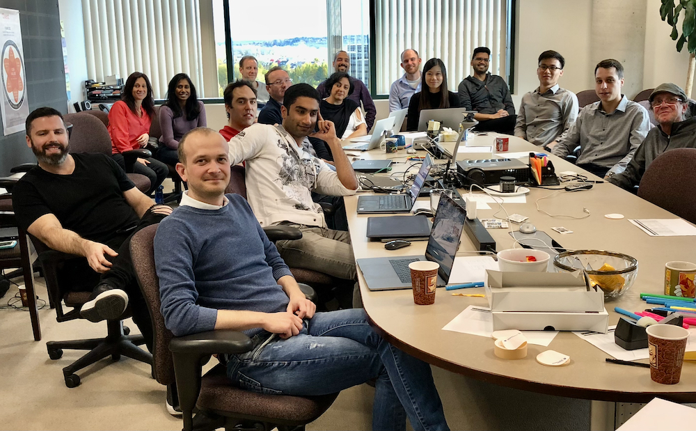
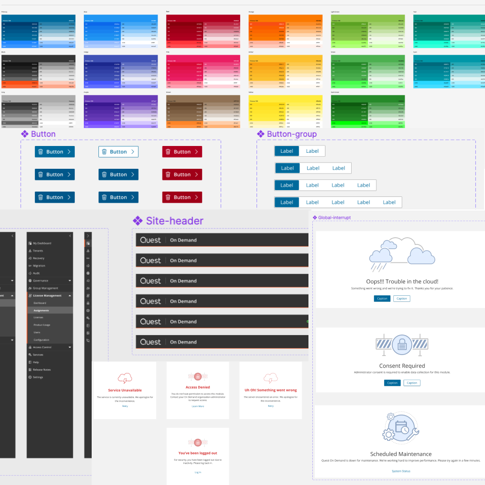

ARCHIVED CASE STUDY · For the updated story and outcome details, visit Systems & Practice →
When I first joined Quest On Demand, I was the only UX designer on the team. It took some digging to find out that we had some wonderful designers working quietly and independently around the world. After reviewing the product that I was hired to enhance, the biggest problem that stood out for me is inconsistency. The modules and features in On Demand looked and behaved in disconnected ways, as if they did not belong together—a reflection of how the design team worked. People were disconnected and designed features for their own modules without seeing the whole product. My mission therefore became clear: I had to connect the people as a design team and eventually create a design system of reusable components to bring consistency across all modules. This mission was successfully accomplished within the first year of my joining Quest.

The first step to achieve my goal was to reach out to different individuals, learn who they are, what they do and how they contributed to the product. Designers were located in Russia, China, US and Canada. I initiated individual conversations that built trust and empathy and eventually started On Demand design meetings for the first time. As the designer for the core product, from which the modules inherited patterns, I helped the team see the value and necessity of a design system—not just style-guide documentation.
It was essential in my opinion to have the UX/UI team meet in person to connect human beings. In my many years of corporate work, I often found that people forget the human aspect and get caught up in the mechanical day to day tasks which often leads to conflicts. Knowing people behind the work fosters empathy and kinder relationships. Therefore, I did many presentations to upper management to advocate for and justify the cost of bringing the team together. That work led to the first On Demand UX/UI summit. Team members from US, China and Russia were flown to our office in Kanata/Canada on October 2019. The conference resulted in deeper connections, setting goals for the year ahead and great collaboration between product managers, designers and developers.
Our team had a style guide that didn’t extend into the design tools. The main problem was a lack of consistency across modules in the same product. Creating a design system that allowed designers to use the same components in different modules was a sure way to ensure design consistency and eventually product consistency across features and modules.
To start creating a design system, we first had to adopt the same design tools to work collaboratively. We started using Sketch with Abstract as a versioning tool for our files. It took some discussion to show designers the value of a shared versioning process. With a development background, versioning made sense to me, but it was new to others. We adopted Abstract and learned to collaborate through branches without disrupting one another’s work.
We needed to define the content of our design system. We conducted elaborate market and community research to learn from existing design systems and identify the structure that was most suitable for our team. Since our Dev team used Angular/Material as the base of their code, we used google material design as a base for our design components.
Over the course of one year, four of us designers created a complete design system with defined styles, colours and components. Each component was researched, designed, reviewed by the whole team and enhanced in iterations. In parallel our individual features and modules started adopting the common component library.
Our product started as puzzle pieces that did not fit but Today On Demand is a whole integrated software.This success was led by inspired designers across continents who strongly promoted a shared design system. Our individual teams started implementing and creating these components. I personally worked with the core Dev team to create the foundation shared component library that other teams inherited to implement their designs.

A few years down the line, Quest’s structure and teams changed drastically and so did the world after a sadly harsh pandemic. I found myself once again with new team members that required a change of tools. Figma became the most popular tool on the market for being independent of device type and combining multiple functionalities. Without hesitation, I adapted the change and led a new team to recreate our design system and update components in the process. We also introduced Storybook so developers could document and mirror shared components in code.